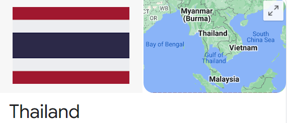

Which country doesn't use forks to put food in their mouths but to transfer to a spoon?
Answer: Thailand

Culture Fact #55. People in
Thailand don't use forks to put food in their mouths.
The fork is simply used just to transfer food to the spoon.